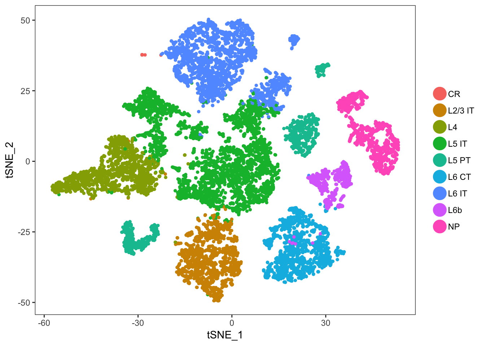

Last updated: 2019-02-04
workflowr checks: (Click a bullet for more information) ✔ R Markdown file: up-to-date
Great! Since the R Markdown file has been committed to the Git repository, you know the exact version of the code that produced these results.
✔ Environment: empty
Great job! The global environment was empty. Objects defined in the global environment can affect the analysis in your R Markdown file in unknown ways. For reproduciblity it’s best to always run the code in an empty environment.
✔ Seed:
set.seed(20190124)
The command set.seed(20190124) was run prior to running the code in the R Markdown file. Setting a seed ensures that any results that rely on randomness, e.g. subsampling or permutations, are reproducible.
✔ Session information: recorded
Great job! Recording the operating system, R version, and package versions is critical for reproducibility.
✔ Repository version: efbfbcf
wflow_publish or wflow_git_commit). workflowr only checks the R Markdown file, but you know if there are other scripts or data files that it depends on. Below is the status of the Git repository when the results were generated:
Ignored files:
Ignored: .Rhistory
Ignored: .Rproj.user/570CF2E1/ctx/
Ignored: .Rproj.user/570CF2E1/explorer-cache/
Ignored: .Rproj.user/570CF2E1/pcs/
Ignored: .Rproj.user/570CF2E1/presentation/
Ignored: .Rproj.user/570CF2E1/profiles-cache/
Ignored: .Rproj.user/570CF2E1/sources/
Ignored: .Rproj.user/570CF2E1/unsaved-notebooks/
Ignored: .Rproj.user/570CF2E1/viewer-cache/
Ignored: .Rproj.user/570CF2E1/viewer_history/
Ignored: .Rproj.user/shared/notebooks/110D6DBD-DE_L5_IT-PT/
Ignored: .Rproj.user/shared/notebooks/46555B75-DataIntegration/
Ignored: .Rproj.user/shared/notebooks/50DFA258-about/
Ignored: .Rproj.user/shared/notebooks/ECD99048-DimensionReduction_Clustering/
Ignored: .Rproj.user/shared/notebooks/FFB804D1-IT-PT_Contrasts/
Ignored: data/Tasic2018-reAnalysis.RData
Untracked files:
Untracked: code/Create_Data_object_rc.R
Untracked: code/Determine_genes_to_filter.R
Unstaged changes:
Modified: .DS_Store
Modified: .Rproj.user/570CF2E1/console06/INDEX001
Modified: code/WP_codes.R
Deleted: code/WP_codes_rc.R
This t-sne plot include only cells that are glutamatergic neurons. Given that L5 IT and PT cells are also glutamatergic, I constrast their gene expressions against all other glutamatergic cells first.

| Version | Author | Date |
|---|---|---|
| 59a6bf2 | Yasin Kaymaz | 2019-01-31 |
(padj < 0.01, avglogFC > 0.2)
(padj < 0.01, avglogFC > 0.2)
.
.
.
.
.
.
sessionInfo()R version 3.5.0 (2018-04-23)
Platform: x86_64-apple-darwin17.5.0 (64-bit)
Running under: macOS 10.14.2
Matrix products: default
BLAS: /System/Library/Frameworks/Accelerate.framework/Versions/A/Frameworks/vecLib.framework/Versions/A/libBLAS.dylib
LAPACK: /System/Library/Frameworks/Accelerate.framework/Versions/A/Frameworks/vecLib.framework/Versions/A/libLAPACK.dylib
locale:
[1] en_US.UTF-8/en_US.UTF-8/en_US.UTF-8/C/en_US.UTF-8/en_US.UTF-8
attached base packages:
[1] stats graphics grDevices utils datasets methods base
other attached packages:
[1] bindrcpp_0.2.2 Seurat_2.3.3 Matrix_1.2-14 cowplot_0.9.3
[5] here_0.1 forcats_0.3.0 stringr_1.3.1 dplyr_0.7.6
[9] purrr_0.2.5 readr_1.1.1 tidyr_0.8.1 tibble_1.4.2
[13] tidyverse_1.2.1 DT_0.4 plotly_4.8.0 ggplot2_3.0.0
loaded via a namespace (and not attached):
[1] readxl_1.1.0 snow_0.4-2 backports_1.1.2
[4] Hmisc_4.1-1 workflowr_1.1.1 plyr_1.8.4
[7] igraph_1.2.1 lazyeval_0.2.1 splines_3.5.0
[10] crosstalk_1.0.0 digest_0.6.15 foreach_1.4.4
[13] htmltools_0.3.6 lars_1.2 gdata_2.18.0
[16] magrittr_1.5 checkmate_1.8.5 cluster_2.0.7-1
[19] mixtools_1.1.0 ROCR_1.0-7 modelr_0.1.2
[22] R.utils_2.6.0 colorspace_1.3-2 rvest_0.3.2
[25] haven_1.1.2 crayon_1.3.4 jsonlite_1.6
[28] bindr_0.1.1 survival_2.42-6 zoo_1.8-3
[31] iterators_1.0.10 ape_5.1 glue_1.2.0
[34] gtable_0.2.0 kernlab_0.9-26 prabclus_2.2-6
[37] DEoptimR_1.0-8 scales_1.0.0 mvtnorm_1.0-8
[40] Rcpp_0.12.17 metap_0.9 dtw_1.20-1
[43] xtable_1.8-2 viridisLite_0.3.0 htmlTable_1.12
[46] reticulate_1.9 foreign_0.8-70 bit_1.1-14
[49] proxy_0.4-22 mclust_5.4.1 SDMTools_1.1-221
[52] Formula_1.2-3 stats4_3.5.0 tsne_0.1-3
[55] htmlwidgets_1.2 httr_1.3.1 gplots_3.0.1
[58] RColorBrewer_1.1-2 fpc_2.1-11 acepack_1.4.1
[61] modeltools_0.2-22 ica_1.0-2 pkgconfig_2.0.1
[64] R.methodsS3_1.7.1 flexmix_2.3-14 nnet_7.3-12
[67] later_0.7.3 labeling_0.3 tidyselect_0.2.4
[70] rlang_0.2.1 reshape2_1.4.3 munsell_0.5.0
[73] cellranger_1.1.0 tools_3.5.0 cli_1.0.0
[76] broom_0.5.0 ggridges_0.5.0 evaluate_0.10.1
[79] yaml_2.2.0 knitr_1.20 bit64_0.9-7
[82] fitdistrplus_1.0-9 robustbase_0.93-1 caTools_1.17.1
[85] RANN_2.6 pbapply_1.3-4 nlme_3.1-137
[88] mime_0.5 whisker_0.3-2 R.oo_1.22.0
[91] xml2_1.2.0 hdf5r_1.0.1 compiler_3.5.0
[94] rstudioapi_0.8 png_0.1-7 stringi_1.2.3
[97] lattice_0.20-35 trimcluster_0.1-2 diffusionMap_1.1-0
[100] pillar_1.3.0 lmtest_0.9-36 data.table_1.11.4
[103] bitops_1.0-6 irlba_2.3.2 httpuv_1.4.4.2
[106] R6_2.3.0 latticeExtra_0.6-28 promises_1.0.1
[109] KernSmooth_2.23-15 gridExtra_2.3 codetools_0.2-15
[112] MASS_7.3-50 gtools_3.8.1 assertthat_0.2.0
[115] rprojroot_1.3-2 withr_2.1.2 diptest_0.75-7
[118] parallel_3.5.0 doSNOW_1.0.16 hms_0.4.2
[121] grid_3.5.0 rpart_4.1-13 class_7.3-14
[124] rmarkdown_1.10 segmented_0.5-3.0 Rtsne_0.15
[127] git2r_0.23.0 shiny_1.1.0 scatterplot3d_0.3-41
[130] lubridate_1.7.4 base64enc_0.1-3 This reproducible R Markdown analysis was created with workflowr 1.1.1